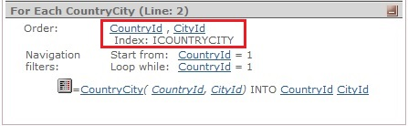

IntroductionGeneXus determines the navigation required for each database access level of an object. That is, for each:
Among other things, the navigation establishes which tables the attributes must be obtained from and, usually, in what order the resulting tuples (records) must be processed/returned. This order is determined on the basis of:
With the order clause (rule or property), the developer indicates the order in which he or she wants records to be processed and retrieved, and they will. But to perform the actual processing, the Specifier could alter that clause, supplemented with contextual info (if there exists defined indexes, conditions for equality, etc) in order to be more performant, although DBMS itself ends up being the one who decides the execution plan. Nevertheless, it is important to understand the data will be retrieved in the explicit order. The aim of this document is to show the different options available to GeneXus at specification time for determining the actual order the mentioned database access levels are scanned in. DescriptionAs a basic principle, we should bear in mind that GeneXus will try to find the best possible order so that the restrictions by equality applied to the level (For Each command, Data Provider group, Data Selector used with 'in' operator, grid with Base Table) are optimizable. Therefore, the following information is taken into account when determining the level's Order:
In this sense, the order to be considered for the generated statement will be determined as described below, with two different cases being distinguished: Order specified in the object level('Order' clause in the For Each or Data Provider Group, 'Orders' node in Data Selector, 'Order' property in the Grid): the level will be ordered by those attributes, whether or not there is an index for them. Additionally, if there are implicit conditions (e.g.: attributes in the parm, attributes instanced by nested navigation levels) or explicit conditions ('Where' clause, 'Condition' property, etc. ) by equality, they will be considered in order to analyze whether or not there is an index containing those attributes plus the attributes of the Order. If an index exists, these attributes will be added to the Order list so that such index will be considered instead. That is, it tries to find the best index to cover the filter conditions evenly. In this way, the query is optimized, and the order requested by the user is maintained. Order not specified in the object levelIn this case, if optimizable conditions exist for that database access level, that means, there is an index for the attributes of the conditions (only equally conditions are considered, that excludes <,>,=<, => operators), the Order will ultimately be determined by these attributes. If no index matching the conditions exists (that is, the scan cannot be optimized according to the level conditions), then the order will be determined by the attributes of the Primary Key. If a Unique Clause (distinct) or Server Paging is used, please read the Considerations section below. Notes:
Important adviceIf a particular order is important to you, you should specify the attributes in the order clause. ExampleIf we have the transaction structure:
Country //first level
{
CountryId*
CountryName
City //second level
{
CityId*
CityName
}
}
and the following For Each ordered by Cities and filtering by Country: For Each order CityId Where CountryId = 1 ... Endfor In this case the navigation is the following:  As shown in the navigation list, the CountryId attribute is being added to the Order specified by the user. The result of the query is exactly the same but optimized. ConsiderationsAbout the information in the navigation listEach level's navigation list may include the name of an index in addition to the order attributes. This information is only useful for non-SQL generators (RPG, Cobol, VB-Access, VFP-DBF), where it is necessary to indicate the index to optimize the query. However, as stated above, for SQL generators the DBMS will decide the best access plan on the basis of the attributes participating in the select (among them, the Order attributes). Several optimizable conditionsIn determining the Order, explicit conditions prevail over implicit conditions, if they are different and there is an index for each one of them. Order in BreaksTo determine the Order in the Breaks, the Order of the two For Each commands it is formed by must be considered first (they are concatenated in a special way, taking into consideration repeated attributes and attributes with constant values). Once the Order of the Break has been determined, it will be optimized as in the other cases, by searching for the best index considering the conditions of the level. Server PagingRecords have to be processed in a specific order when Server Paging is used. If the order is not set explicitly, the specifier does it implicitly. 1 When using PostgreSQL as DBMS, if the navigation uses Server Paging optimization, then the Order clause must contain attributes that belong to a Candidate key. Unique / distinct clausesIf a Unique Clause (or distinct) is present and no order specified explicitly, the specifier tries to set implicitly an order composed by the attributes of the unique/distinct clause. If no order that is compatible with a defined index is found, order NONE is chosen (since this is not an option if Server Paging is used, records are ordered by some of the attributes of the Unique clause in that case). 1
1 These statements are valid as of GeneXus X Evolution 3 Upgrade 4 2 This statement is valid as of GeneXus 15 Upgrade 7. This is necessary in order to avoid the issue reported in the SAC #41039.
|
| Backlinks | |
| Database performance from the GeneXus perspective | Navigation Reports for Procedures, Web Panels and Data Providers |
| Order clause |